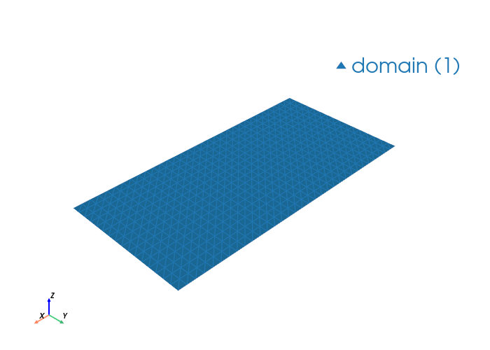

Hollow Rectangular Waveguide Modes#
This notebook solves a PEC rectangular waveguide with WaveguideModeSolver, compares against analytic TE/TM modes, and plots the first fields.
import palacetoolkit as ptk
import gmsh
import numpy as np
import matplotlib.pyplot as plt
from palacetoolkit.mode_solver import WaveguideModeSolver
from palacetoolkit.utils import write_and_finalize_gmsh
from palacetoolkit.viz import view_mesh
def _set_transfinite_rect(surf_tag, nx, ny):
bnd = gmsh.model.getBoundary([(2, surf_tag)], oriented=True)
lines = [abs(t) for _, t in bnd]
for line in lines:
pts = gmsh.model.getBoundary([(1, line)], oriented=False)
c0 = gmsh.model.getValue(0, pts[0][1], [])
c1 = gmsh.model.getValue(0, pts[1][1], [])
dx = abs(c1[0] - c0[0])
dy = abs(c1[1] - c0[1])
n = (nx + 1) if dx > dy else (ny + 1)
gmsh.model.mesh.setTransfiniteCurve(line, n)
gmsh.model.mesh.setTransfiniteSurface(surf_tag)
def make_rectangular_mesh(a, b, nx, ny, structured=True, lc=None, filename=None):
gmsh.initialize()
gmsh.option.setNumber("General.Verbosity", 0)
gmsh.model.add("hollow_waveguide")
gmsh.model.occ.addRectangle(0, 0, 0, a, b, tag=1)
gmsh.model.occ.synchronize()
gmsh.model.addPhysicalGroup(2, [1], tag=1, name="domain")
bnd = gmsh.model.getBoundary([(2, 1)], oriented=False)
bnd_tags = [abs(t) for _, t in bnd]
gmsh.model.addPhysicalGroup(1, bnd_tags, tag=1, name="PEC")
if structured:
_set_transfinite_rect(1, nx, ny)
gmsh.model.mesh.setRecombine(2, 1)
else:
_lc = lc if lc is not None else max(a / nx, b / ny)
gmsh.option.setNumber("Mesh.CharacteristicLengthMin", 0.8 * _lc)
gmsh.option.setNumber("Mesh.CharacteristicLengthMax", 1.2 * _lc)
gmsh.model.mesh.generate(2)
return write_and_finalize_gmsh(filename, prefix="wg_rect_")
def analytic_kn(a, b, omega, m_max=5, n_max=5, mu=1.0, eps=1.0):
modes = []
k0_sq = omega**2 * mu * eps
for m in range(0, m_max + 1):
for n in range(0, n_max + 1):
if m == 0 and n == 0:
continue
kc_sq = (m * np.pi / a) ** 2 + (n * np.pi / b) ** 2
kn = np.sqrt((k0_sq - kc_sq) + 0j)
modes.append((f"TE{m}{n}", np.sqrt(kc_sq), kn))
for m in range(1, m_max + 1):
for n in range(1, n_max + 1):
kc_sq = (m * np.pi / a) ** 2 + (n * np.pi / b) ** 2
kn = np.sqrt((k0_sq - kc_sq) + 0j)
modes.append((f"TM{m}{n}", np.sqrt(kc_sq), kn))
modes.sort(key=lambda x: -x[2].real)
return modes
a, b = 2.0, 1.0
mu, eps = 1.0, 1.0
c0 = 1.0 / np.sqrt(mu * eps)
fc_te10 = c0 * np.pi / a / (2 * np.pi)
f_op = 3.5 * fc_te10
omega = 2 * np.pi * f_op
analytic = analytic_kn(a, b, omega, m_max=4, n_max=4, mu=mu, eps=eps)
print("Top 8 analytic modes:")
for name, kc, kn in analytic[:8]:
print(f" {name:6s}: kc={kc:8.4f}, kn={kn.real:+10.6f}{kn.imag:+10.6f}j")
Top 8 analytic modes:
TE10 : kc= 1.5708, kn= +5.268611 +0.000000j
TE01 : kc= 3.1416, kn= +4.511769 +0.000000j
TE20 : kc= 3.1416, kn= +4.511769 +0.000000j
TE11 : kc= 3.5124, kn= +4.229499 +0.000000j
TM11 : kc= 3.5124, kn= +4.229499 +0.000000j
TE21 : kc= 4.4429, kn= +3.238280 +0.000000j
TM21 : kc= 4.4429, kn= +3.238280 +0.000000j
TE30 : kc= 4.7124, kn= +2.831793 +0.000000j
from palacetoolkit.mode_solver import ModeMetrics
mesh_file = make_rectangular_mesh(
a,
b,
nx=32,
ny=16,
structured=True,
)
view_mesh(mesh_file)
solver = WaveguideModeSolver(
mesh_file=mesh_file,
order=2,
pec_bdr=[1],
materials=[{"attrs": [1], "eps_r": eps, "mu_r": mu}],
omega=omega,
)
results = solver.solve(num_modes=8, mode_idx=1, target=0.0, save=0, num_procs=4)
print("\nNumerical modes:")
for i in sorted(results):
mode = results[i]
print(f" Mode {i}: kn={mode.k_n.real:+10.6f}{mode.k_n.imag:+10.6f}j")
Loading mesh file: /tmp/wg_rect_agdr3qlv.msh
Groups to render transparent: ['air_none', 'air_plastic_enclosure']
Mesh loaded successfully with 2 cell blocks
Found 1024 triangles total
Physical group tags in mesh: {1: 'domain'}

Running: /home/martin/.cache/palacetoolkit/runtime/palace-cpu-v0.17.0/bin/palace --serial /tmp/wg_rect_agdr3qlv_modes/config.json
>> /home/martin/.cache/palacetoolkit/runtime/palace-cpu-v0.17.0/bin/palace-x86_64.bin /tmp/wg_rect_agdr3qlv_modes/config.json
_____________ _______
_____ __ \____ __ /____ ____________
____ /_/ / __ ` / / __ ` / ___/ _ \
___ _____/ /_/ / / /_/ / /__/ ___/
/__/ \___,__/__/\___,__/\_____\_____/
Git changeset ID: v0.17.0-194-g01f5d9bd1
Running with 1 MPI process, 1 OpenMP thread
Device configuration: omp,cpu
Memory configuration: host-std
libCEED backend: /cpu/self/xsmm/blocked
Characteristic length and time scales:
Lc = 2.000e+00 m, tc = 6.671e+00 ns
Finished partitioning mesh into 1 subdomain
Mesh curvature order: 1
Mesh bounding box:
(Xmin, Ymin) = (+0.000e+00, +0.000e+00) m
(Xmax, Ymax) = (+2.000e+00, +1.000e+00) m
Parallel Mesh Stats:
minimum average maximum total
vertices 561 561 561 561
edges 1072 1072 1072 1072
elements 512 512 512 512
neighbors 0 0 0
minimum maximum
h 0.03125 0.03125
kappa 1 1
Estimated current per-rank memory usage is: Min. 51.2M, Max. 51.2M, Avg. 51.2M, Total 51.2M
Estimated current per-node memory usage is: Min. 51.2M, Max. 51.2M, Avg. 51.2M, Total 51.2M
Configuring 2D waveguide mode analysis at f = 2.625e-01 GHz (omega = 1.100319e+01)
ND space: 4192 DOFs, H1 space: 2145 DOFs, total: 6337
Auto kn_target = 1.154024e+01 (from max(mu_r) * max(epsilon_r) = 1.000000e+00)
Solving GEP for 8 propagation mode(s)...
Residual norms for GMRES solve
0 (restart 0) KSP residual norm 1.900686e-01
1 (restart 0) KSP residual norm 5.497017e-14
GMRES solver converged in 1 iteration (avg. reduction factor: 2.892e-13)
Residual norms for GMRES solve
0 (restart 0) KSP residual norm 5.557880e-02
1 (restart 0) KSP residual norm 2.026715e-14
GMRES solver converged in 1 iteration (avg. reduction factor: 3.647e-13)
Residual norms for GMRES solve
0 (restart 0) KSP residual norm 2.978490e-02
1 (restart 0) KSP residual norm 2.728975e-14
GMRES solver converged in 1 iteration (avg. reduction factor: 9.162e-13)
Residual norms for GMRES solve
0 (restart 0) KSP residual norm 1.156731e-01
1 (restart 0) KSP residual norm 3.795863e-14
GMRES solver converged in 1 iteration (avg. reduction factor: 3.282e-13)
Residual norms for GMRES solve
0 (restart 0) KSP residual norm 4.213735e-02
1 (restart 0) KSP residual norm 1.958863e-14
GMRES solver converged in 1 iteration (avg. reduction factor: 4.649e-13)
Residual norms for GMRES solve
0 (restart 0) KSP residual norm 1.193495e-02
1 (restart 0) KSP residual norm 2.481224e-14
GMRES solver converged in 1 iteration (avg. reduction factor: 2.079e-12)
Residual norms for GMRES solve
0 (restart 0) KSP residual norm 9.002334e-02
1 (restart 0) KSP residual norm 5.865397e-14
GMRES solver converged in 1 iteration (avg. reduction factor: 6.515e-13)
Residual norms for GMRES solve
0 (restart 0) KSP residual norm 1.264014e-01
1 (restart 0) KSP residual norm 6.966671e-14
GMRES solver converged in 1 iteration (avg. reduction factor: 5.512e-13)
Residual norms for GMRES solve
0 (restart 0) KSP residual norm 6.497191e-02
1 (restart 0) KSP residual norm 2.107648e-14
GMRES solver converged in 1 iteration (avg. reduction factor: 3.244e-13)
Residual norms for GMRES solve
0 (restart 0) KSP residual norm 4.318565e-02
1 (restart 0) KSP residual norm 3.722923e-15
GMRES solver converged in 1 iteration (avg. reduction factor: 8.621e-14)
Residual norms for GMRES solve
0 (restart 0) KSP residual norm 1.650705e-02
1 (restart 0) KSP residual norm 2.439935e-15
GMRES solver converged in 1 iteration (avg. reduction factor: 1.478e-13)
Residual norms for GMRES solve
0 (restart 0) KSP residual norm 3.939922e-02
1 (restart 0) KSP residual norm 9.687404e-15
GMRES solver converged in 1 iteration (avg. reduction factor: 2.459e-13)
Residual norms for GMRES solve
0 (restart 0) KSP residual norm 5.822965e-02
1 (restart 0) KSP residual norm 1.439697e-14
GMRES solver converged in 1 iteration (avg. reduction factor: 2.472e-13)
Residual norms for GMRES solve
0 (restart 0) KSP residual norm 1.466726e-02
1 (restart 0) KSP residual norm 6.900204e-15
GMRES solver converged in 1 iteration (avg. reduction factor: 4.704e-13)
Residual norms for GMRES solve
0 (restart 0) KSP residual norm 1.946027e-02
1 (restart 0) KSP residual norm 1.895608e-15
GMRES solver converged in 1 iteration (avg. reduction factor: 9.741e-14)
Residual norms for GMRES solve
0 (restart 0) KSP residual norm 9.115941e-03
1 (restart 0) KSP residual norm 5.550031e-16
GMRES solver converged in 1 iteration (avg. reduction factor: 6.088e-14)
Residual norms for GMRES solve
0 (restart 0) KSP residual norm 1.074433e-02
1 (restart 0) KSP residual norm 9.816185e-16
GMRES solver converged in 1 iteration (avg. reduction factor: 9.136e-14)
Residual norms for GMRES solve
0 (restart 0) KSP residual norm 5.607772e-03
1 (restart 0) KSP residual norm 1.537393e-15
GMRES solver converged in 1 iteration (avg. reduction factor: 2.742e-13)
Residual norms for GMRES solve
0 (restart 0) KSP residual norm 8.482659e-03
1 (restart 0) KSP residual norm 5.839469e-15
GMRES solver converged in 1 iteration (avg. reduction factor: 6.884e-13)
Residual norms for GMRES solve
0 (restart 0) KSP residual norm 6.637011e-03
1 (restart 0) KSP residual norm 1.732251e-14
GMRES solver converged in 1 iteration (avg. reduction factor: 2.610e-12)
Residual norms for GMRES solve
0 (restart 0) KSP residual norm 1.494313e-02
1 (restart 0) KSP residual norm 7.198537e-15
GMRES solver converged in 1 iteration (avg. reduction factor: 4.817e-13)
Residual norms for GMRES solve
0 (restart 0) KSP residual norm 2.821868e-02
1 (restart 0) KSP residual norm 1.149329e-14
GMRES solver converged in 1 iteration (avg. reduction factor: 4.073e-13)
Residual norms for GMRES solve
0 (restart 0) KSP residual norm 2.280587e-02
1 (restart 0) KSP residual norm 1.974346e-14
GMRES solver converged in 1 iteration (avg. reduction factor: 8.657e-13)
Residual norms for GMRES solve
0 (restart 0) KSP residual norm 5.403202e-03
1 (restart 0) KSP residual norm 2.573460e-15
GMRES solver converged in 1 iteration (avg. reduction factor: 4.763e-13)
Residual norms for GMRES solve
0 (restart 0) KSP residual norm 4.161792e-03
1 (restart 0) KSP residual norm 9.249421e-15
GMRES solver converged in 1 iteration (avg. reduction factor: 2.222e-12)
Residual norms for GMRES solve
0 (restart 0) KSP residual norm 1.504896e-02
1 (restart 0) KSP residual norm 3.907876e-14
GMRES solver converged in 1 iteration (avg. reduction factor: 2.597e-12)
Residual norms for GMRES solve
0 (restart 0) KSP residual norm 5.821418e-03
1 (restart 0) KSP residual norm 1.317862e-14
GMRES solver converged in 1 iteration (avg. reduction factor: 2.264e-12)
Residual norms for GMRES solve
0 (restart 0) KSP residual norm 2.043179e-03
1 (restart 0) KSP residual norm 9.882368e-16
GMRES solver converged in 1 iteration (avg. reduction factor: 4.837e-13)
Residual norms for GMRES solve
0 (restart 0) KSP residual norm 1.786422e-03
1 (restart 0) KSP residual norm 1.274962e-15
GMRES solver converged in 1 iteration (avg. reduction factor: 7.137e-13)
Residual norms for GMRES solve
0 (restart 0) KSP residual norm 2.831683e-03
1 (restart 0) KSP residual norm 1.566782e-14
GMRES solver converged in 1 iteration (avg. reduction factor: 5.533e-12)
Residual norms for GMRES solve
0 (restart 0) KSP residual norm 1.007629e-02
1 (restart 0) KSP residual norm 7.760764e-14
GMRES solver converged in 1 iteration (avg. reduction factor: 7.702e-12)
Residual norms for GMRES solve
0 (restart 0) KSP residual norm 4.308857e-03
1 (restart 0) KSP residual norm 2.780050e-14
GMRES solver converged in 1 iteration (avg. reduction factor: 6.452e-12)
Residual norms for GMRES solve
0 (restart 0) KSP residual norm 2.161542e-03
1 (restart 0) KSP residual norm 2.665133e-15
GMRES solver converged in 1 iteration (avg. reduction factor: 1.233e-12)
Residual norms for GMRES solve
0 (restart 0) KSP residual norm 2.111105e-03
1 (restart 0) KSP residual norm 2.774952e-15
GMRES solver converged in 1 iteration (avg. reduction factor: 1.314e-12)
Residual norms for GMRES solve
0 (restart 0) KSP residual norm 2.703013e-03
1 (restart 0) KSP residual norm 9.345132e-15
GMRES solver converged in 1 iteration (avg. reduction factor: 3.457e-12)
Residual norms for GMRES solve
0 (restart 0) KSP residual norm 2.840440e-03
1 (restart 0) KSP residual norm 1.104149e-14
GMRES solver converged in 1 iteration (avg. reduction factor: 3.887e-12)
Residual norms for GMRES solve
0 (restart 0) KSP residual norm 2.788175e-03
1 (restart 0) KSP residual norm 1.849452e-14
GMRES solver converged in 1 iteration (avg. reduction factor: 6.633e-12)
Residual norms for GMRES solve
0 (restart 0) KSP residual norm 5.968292e-03
1 (restart 0) KSP residual norm 4.595231e-14
GMRES solver converged in 1 iteration (avg. reduction factor: 7.699e-12)
Residual norms for GMRES solve
0 (restart 0) KSP residual norm 3.529073e-03
1 (restart 0) KSP residual norm 1.900979e-14
GMRES solver converged in 1 iteration (avg. reduction factor: 5.387e-12)
Residual norms for GMRES solve
0 (restart 0) KSP residual norm 1.537451e-03
1 (restart 0) KSP residual norm 2.448530e-15
GMRES solver converged in 1 iteration (avg. reduction factor: 1.593e-12)
Residual norms for GMRES solve
0 (restart 0) KSP residual norm 1.872380e-03
1 (restart 0) KSP residual norm 1.067211e-15
GMRES solver converged in 1 iteration (avg. reduction factor: 5.700e-13)
Residual norms for GMRES solve
0 (restart 0) KSP residual norm 1.265849e-03
1 (restart 0) KSP residual norm 1.264539e-15
GMRES solver converged in 1 iteration (avg. reduction factor: 9.990e-13)
Residual norms for GMRES solve
0 (restart 0) KSP residual norm 2.541261e-03
1 (restart 0) KSP residual norm 2.194153e-15
GMRES solver converged in 1 iteration (avg. reduction factor: 8.634e-13)
Found 9 converged eigenvalues (sigma = -1.331771e+02)
eig 0: kn = 1.054516e+01+4.081167e-15i, n_eff = 9.583738e-01+3.709077e-16i
eig 1: kn = 9.032807e+00+4.113589e-14i, n_eff = 8.209265e-01+3.738543e-15i
eig 2: kn = 9.032807e+00-1.818667e-14i, n_eff = 8.209265e-01-1.652855e-15i
eig 3: kn = 8.468885e+00-2.138248e-12i, n_eff = 7.696756e-01-1.943299e-13i
eig 4: kn = 8.468885e+00+7.028803e-14i, n_eff = 7.696756e-01+6.387971e-15i
eig 5: kn = 6.489462e+00+5.015378e-14i, n_eff = 5.897802e-01+4.558115e-15i
eig 6: kn = 6.489462e+00+4.320984e-12i, n_eff = 5.897802e-01+3.927030e-13i
eig 7: kn = 5.678270e+00-3.672850e-14i, n_eff = 5.160568e-01-3.337988e-15i
eig 8: kn = 3.401550e-11-2.689935e+00i, n_eff = 3.091423e-12-2.444688e-01i
Computing solution error estimates and performing postprocessing
m, Re{kn} (1/m), Im{kn} (1/m), Re{n_eff}, Im{n_eff}, Error (Bkwd.), Error (Abs.)
1, +5.272582e+00, +2.040583e-15, +9.583738e-01, +3.709077e-16, +2.591505e-16, +1.286903e-13
2, +4.516404e+00, +2.056794e-14, +8.209265e-01, +3.738543e-15, +1.096654e-15, +2.322803e-13
3, +4.516404e+00, -9.093337e-15, +8.209265e-01, -1.652855e-15, +3.281985e-15, +6.951510e-13
4, +4.234442e+00, -1.069124e-12, +7.696756e-01, -1.943299e-13, +3.855242e-15, +6.857024e-13
5, +4.234442e+00, +3.514402e-14, +7.696756e-01, +6.387971e-15, +2.817445e-13, +5.011175e-11
6, +3.244731e+00, +2.507689e-14, +5.897802e-01, +4.558115e-15, +2.183201e-14, +2.623639e-12
7, +3.244731e+00, +2.160492e-12, +5.897802e-01, +3.927030e-13, +2.265411e-14, +2.722434e-12
8, +2.839135e+00, -1.836425e-14, +5.160568e-01, -3.337988e-15, +6.537755e-16, +7.091175e-14
Completed 0 iterations of adaptive mesh refinement (AMR):
Indicator norm = 1.631e-03, global unknowns = 6337
Max. iterations = 0, tol. = 1.000e-02
Estimated peak per-rank memory usage is: Min. 96.3M, Max. 96.3M, Avg. 96.3M, Total 96.3M
Estimated peak per-node memory usage is: Min. 96.3M, Max. 96.3M, Avg. 96.3M, Total 96.3M
Elapsed Time Report (s) Min. Max. Avg.
==============================================================
Initialization 0.046 0.046 0.046
Mesh Preprocessing 0.015 0.015 0.015
Operator Construction 0.089 0.089 0.089
Preconditioner 0.302 0.302 0.302
Eigenvalue Solve 0.179 0.179 0.179
Estimation 0.004 0.004 0.004
Construction 0.014 0.014 0.014
Solve 0.015 0.015 0.015
Postprocessing 0.401 0.401 0.401
Disk IO 0.011 0.011 0.011
--------------------------------------------------------------
Total 2.045 2.045 2.045
Peak Memory Per-Node Total Total HWM
==============================================================
Initialization 2.2M 2.2M 2.2M
Mesh Preprocessing 1.1M 1.1M 3.3M
Operator Construction 10.1M 10.1M 13.4M
Preconditioner 22.3M 22.3M 35.7M
Eigenvalue Solve 10.7M 10.7M 46.4M
Estimation 0.0K 0.0K 46.4M
Construction 3.1M 3.1M 49.5M
Solve 0.0K 0.0K 49.5M
Postprocessing 0.0K 0.0K 49.5M
Disk IO 2.4M 2.4M 51.9M
--------------------------------------------------------------
Total 72.3M 72.3M 72.3M
Numerical modes:
Mode 1: kn= +5.272582 +0.000000j
# Field visualization is no longer available through the solver.
# Palace writes VTU field output files when save > 0 in solver.solve().
# Load the VTU files with pyvista for field visualization:
# import pyvista as pv
# mesh = pv.read("mode_1.vtu")
# mesh.plot(scalars="Ez", cmap="hot")
#
# For more details, see palacetoolkit.postpro_vtu utilities.
print("Field visualization moved to pyvista-based VTU post-processing.")
Field visualization moved to pyvista-based VTU post-processing.